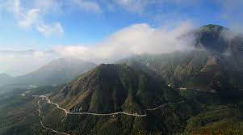

Tour Hà Nội - Đèo Ô Quy Hồ - Cao Nguyên Sìn Hồ (2N1Đ)
2.265.000 vnđ
Giới Thiệu
Cung đường đèo dài gần 50km, trong đó 2/3 con đường thuộc địa phận huyện Tam Đường - Lai Châu, 1/3 còn lại nằm ở phía Sa Pa - Lào Cai. Vượt qua cổng Vườn Quốc gia Hoàng Liên chừng vài cây số là tới đỉnh đèo Ô Quy Hồ, đây cũng chính là điểm ranh giới giữa hai tỉnh miền núi phía Bắc Lào Cai và Lai Châu, uốn lượn quanh dãy núi Hoàng Liên, nơi có đỉnh Phanxipan - nóc nhà Đông Dương lộng gió trên đỉnh cao 3.414m.
Lên thăm cao nguyên Sìn Hồ du khách sẽ có dịp được ngắm nhìn thiên nhiên hùng vĩ của núi rừng, được khám phá những phong tục tập quán độc đáo trong đời sống sinh hoạt của bà con dân bản và đặc biệt là được thưởng thức những món ăn mang đậm hương vị của núi rừng như thịt trâu quấn lá lốt, dê hấp, lợn bản, cá suối, thắng cố, xôi nếp nương …

Lịch Trình
NGÀY 01: Hà Nội - Đèo Ô Quy Hồ
05h30: Xe và HDV của PYS Travel đón quý khách tại Nhà Hát Lớn Hà Nội, khởi hành đi Lai Châu. Quý khách dừng ăn sáng tự túc dọc đường, nghỉ ngơi.
Xe đưa đoàn dừng nghỉ chân ven đường ở Thung Khe. Tại đây Quý khách sẽ tham gia vào 1 phiên chợ nhỏ tên đèo Thung Khe, đoàn nghỉ ngơi và chụp ảnh. Xe tiếp tục đưa đoàn di chuyển lên thị trấn Mộc Châu
Trưa: Quý khách thưởng thức bữa trưa tại nhà hàng địa phương với những món ăn đặc sản Tây Bắc, sau đó nghỉ ngơi.
Chiều: Sau bữa trưa đoàn tiếp tục hành trình đến với thành phố Sơn La. Xe đưa Quý khách đi thăm Bảo tàng Sơn La, Nhà tù Sơn La – Nơi lưu đã từng tạm giam những chiến sỹ cách mạng kiên chung của Đảng – Nhà nước ta trong thời kỳ chống Pháp, sau đó đoàn tự do chụp hình lưu niệm và đi thăm cây đào Tô Hiệu.
16h30: Xe đưa quý khách về khách sạn nhận phòng nghỉ ngơi
Tối: Quý khách ăn tối thưởng thức các món ăn ngon đặc sản ẩm thực Tây Bắc, tự do dạo chơi hoặc nghỉ ngơi, nghỉ đêm tại khách sạn ở Sơn La.
NGÀY 02: Cao Nguyên Sìn Hồ
07h00 : Quý khách ăn sáng, trả phòng khách sạn. Sau đó tiếp tục hành trình đi Lai Châu. Tiếp tục hành trình đến một trong “Tứ Đại Đỉnh Đèo” mang tên Đèo Pha Đin còn được gọi là Dốc Pha Đin, trong đó Pha nghĩa là "trời", Đin là "đất" hàm nghĩa nơi đây là chỗ tiếp giáp giữa trời và đất. Dọc đường đi, chiêm ngưỡng những cánh hoa đào hoa mận khoe sắc hai bên đường.
HDV tiếp tục đưa Quý khách đến cụm di tích sở chỉ huy chiến dịch Điện Biên Phủ ở Mường Phăng cách trung tâm thành phố gần 40km. Căn cứ nơi lán chỉ huy quân sự mà Đại tướng Võ Nguyên Giáp đã chỉ huy trận đánh Điện Biên
Trưa: Đoàn ăn trưa tại nhà hàng.
Chiều: HDV đưa đoàn tham quan:
Bảo Tàng lịch sử Điện Biên Phủ – Bảo tàng có 5 khu trưng bầy với 274 hiện vật và 122 bức tranh theo từng chủ đề: Vị trí chiến lược, Tập đoàn cứ điểm của địch, Đường lối chỉ đạo của Đảng, Ảnh hưởng của chiến thắng Điện Biên Phủ và Điện Biên Phủ ngày nay.
Viếng Nghĩa trang liệt sỹ A1, đồi A1 – Nơi đây có 644 ngôi mộ là những chiến sỹ quân dân ta đã hy sinh anh dũng trong chiến dịch Điện Biên Phủ
Hầm Đờ Cát, Cầu Mường Thanh, sông Nậm Rốn, Tượng đài chiến thắng Điện Biên Phủ – Những địa danh vẫn còn mang đầy dư âm oai hùng của cuộc chiến mang ý nghĩa lịch sử của toàn dân tộc.
Tối: Đoàn dùng bữa tối tại nhà hàng với những món ăn đặc sản Điện Biên.
Dịch Vụ
GIÁ BAO GỒM:
- Xe ô tô du lịch đời mới theo lịch trình
- Khách sạn tiêu chuẩn 02 người/phòng; lẻ nam/nữ ở phòng ba
- Các bữa ăn theo lịch trình: 120.000VNĐ/bữa chính; 30.000VNĐ/bữa sáng
- Vé thắng cảnh vào cửa 1 lần.
- Nước uống 01 chai/người/ngày.
KHÔNG BAO GỒM:
- Thuế VAT.
- Đồ uống, điện thoại, chi phí giặt là hoặc chi phí cá nhân khác
- Ăn uống ngoài chương trình